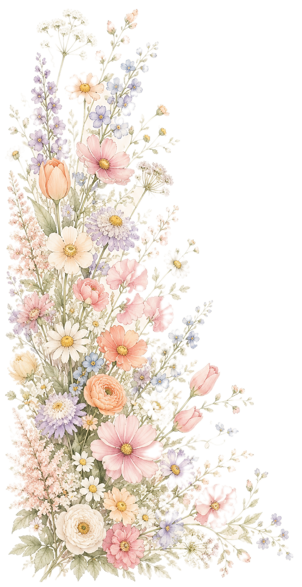
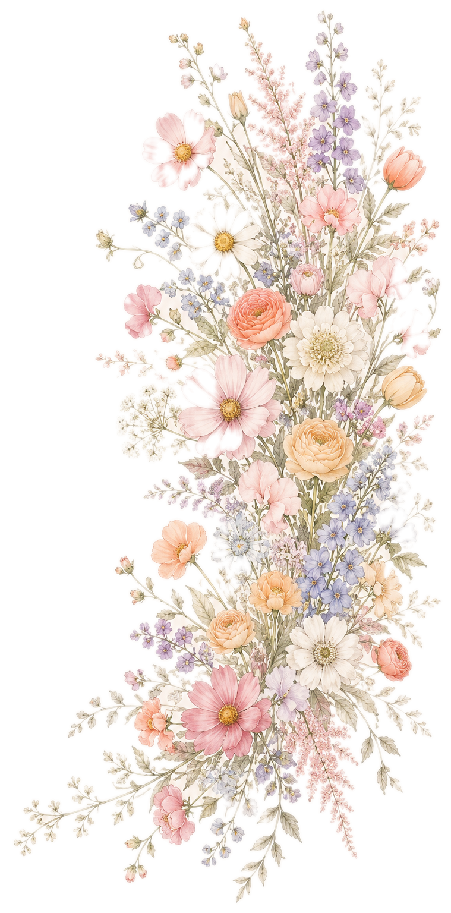

Tom & Sarah
27 maart 2027
Lodewijk van Male · Brugge
Wij tellen alvast ongeduldig af naar het moment waarop we elkaar het ja-woord geven. Hopelijk kijken jullie er ook zo naar uit om samen met ons de liefde te vieren!
Bekijk de uitnodiging—dagen
—uren
—minuten
—seconden